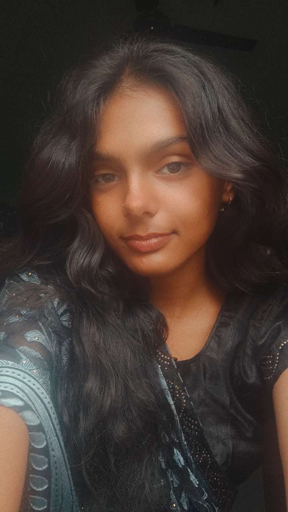
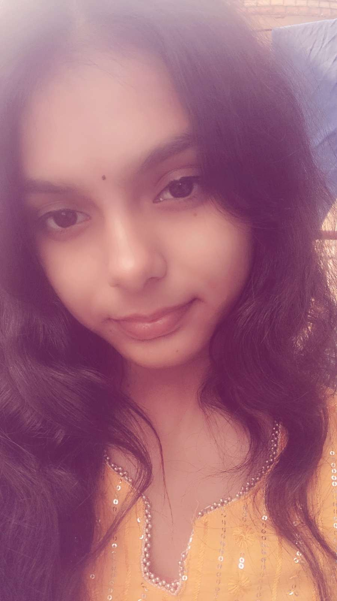
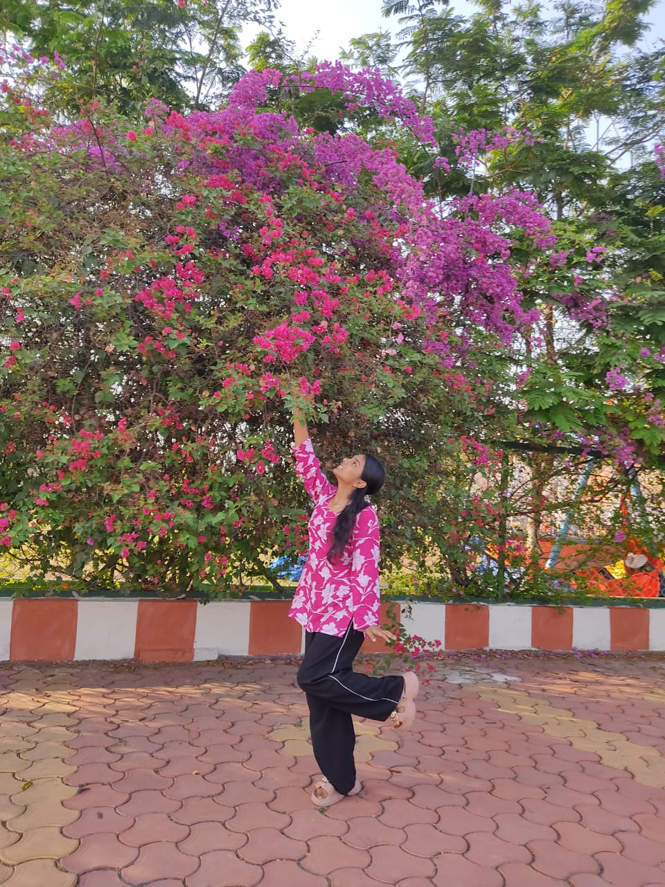
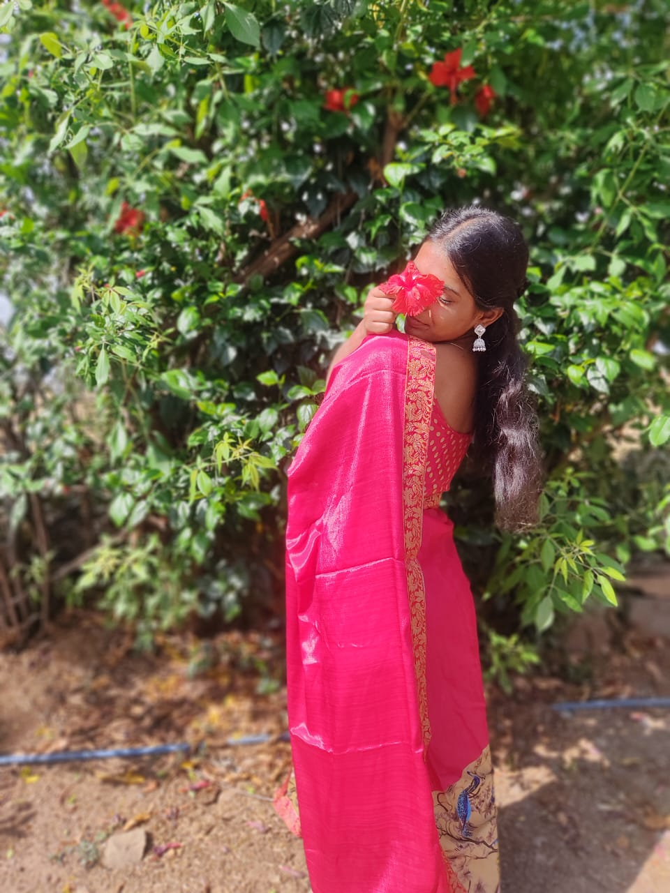

Zindagi me kuch log aise aate hain jo aapko badalte nahi hain, balki aapko aapse hi dobara mila dete hain. Lailaa jii, aapka meri zindagi me aana bhi bilkul aisa hi tha—ek khamosh sukoon ki tarah, jo bina shor kiye poore dil par chha jata hai.
Jab hamari baatein shuru hui thin, tab mujhe nahi pata tha ki ‘Between You and Me’ sirf ek naam nahi rahega, balki ek aisi safe space ban jayega jahan main bina soche apne har jazbaat rakh sakta hoon. Aapke saath bitae gaye lamhe, woh dhere-dhere ek doosre ki aadat banna, aur bina kahe ek doosre ki dhoop-chhaon ko samajh lena—yeh sab kisi mizaaj se kam nahi hai.
Yeh kitaab unhi chhote-chhote panno ka ek jahan hai jo humne saath milkar likhe hain. Yeh pehla safha us khubsoorat safar ke naam, jisne mujhe sikhaya ki jab aap sath hote ho, toh poori duniya ka shor ek taraf aur aapki baaton ka sukoon ek taraf ho jata hai.

Lailaa jii ke baare me likhna kisi ek panno ki kahani nahi, balki ek aisa silsila hai jisme har shabd pichle se zyada gehra mehsoos hota hai. Humara safar sirf aam mulakaton ya halki-fulki baaton se nahi bana, balki yeh us 'Heart to Heart' aur 'Between You and Me' wali neev par khada hai, jahan humne lafzon ke zariye ek doosre ki rooh ko chhua hai. Duniya ke liye bonding ka matlab shayad sirf waqt bitana hota hoga, par humari bonding un gehre, lambe paragraphs me chhipi hai, jahan har ek sawaal aur har ek jawaab ne hume ek doosre ke aur kareeb lakar khada kar diya.
Mujhe yaad hai woh waqt jab hum bas baatein nahi kar rahe the, balki ek doosre ko padh rahe the. Ek taraf woh sawaal the jo humne ek doosre se pooche, taaki un jawabon me hum un jazbaaton ko dhoondh sakein jo aksar khamoshi me chhupe reh jaate hain. Aur doosri taraf thi woh nayi nayi cheezein, woh nayi feelings jo humne saath milkar seekhi. Har ek naye paragraph ke saath, maine aapke dil ke ek naye hisse ko explore kiya. Aapki pasand, aapke darr, aapki woh chhoti-chhoti aadatayein jinhe shayad aap khud bhi itna notice nahi karti hongi—woh sab mere liye kisi khazaane ki tarah the, jise main roz thoda aur samajhna chahta tha.
'Heart to Heart' sirf ek naam nahi tha, yeh ek waada tha ki mere andar ka har chal raha toofan, har ek ehsaas bina kisi parde ke seedha aapke dil tak pahuchega. Aur 'Between You and Me' ne hume yeh sikhaya ki is poori duniya me ek aisi jagah hai, ek aisi safe space hai, jahan kisi aur ka koi zor nahi, jahan sirf hum dono hain, aur hamare darmiyaan panapne wale woh naye-naye jazbaat hain. Jab aap un baaton ko padh kar apne ehsaas bayaan karti hain, toh lagta hai jaise waqt theher gaya ho. Aapki woh alag si perspective, aapka har naye emotion ko poore dil se apnana, aur bina soche mujhe apna sabse vulnerable side dikhana—yeh sab mujhe aapse baar-baar, aur pehle se zyada mohabbat karne par majboor kar deta hai.
Jab do log is gehrai me utarkar apne rishte ko waqt dete hain, toh woh sirf dost ya humsafar nahi reh jaate; woh ek doosre ki rooh ki aadat ban jaate hain. Yeh chapter usi aadat, un ankahe ehsaason, aur us khoobsurat bond ke naam hai, jise humne ek-ek paragraph, ek-ek naye sawaal, aur ek-ek nayi feeling se buniyaad di hai. Lailaa jii, aap mere un saare sawaalon ka woh sabse sukoon bhara jawaab hain, jise main poori zindagi padhna chahta hoon.

Zindagi ke shor me jab sab kuch bohot heavy lagne lagta hai, tab dil kisi aisi jagah ko dhoondhta hai jahan bina kuch kahe sab samajh liya jaye. Lailaa jii, mere liye woh jagah, woh thehrav sirf aap ho. Humari baatein, humare paragraphs aur 'Heart to Heart' sessions toh apni jagah bohot khaas hain, par aapke hone ka jo ek khamosh ehsaas hai, uski tulna kisi cheez se nahi ki ja sakti.
Kabhi kabhi sukoon isme nahi hota ki hum ghanton baatein karein; sukoon isme hota hai ki mujhe pata hai aap mere saath ho. Woh ek invisible connection jo bina kisi shabd ke hume jode rakhta hai. Jab duniya ki bheed aur uljhanein thaka deti hain, toh aapka bas ek khayal ya aapki ek chhoti si chahat kisi thandi hawa ke jhonke jaisi lagti hai. Is safar me maine jana hai ki jab aap paas hote ho, toh meri khamoshi ko bhi ek aawaz mil jati hai.
Aapki maujoodgi ne mujhe sikhaya hai ki sabse sacha bond sirf lafzon ka mohtaj nahi hota; woh khamoshi me bhi utni hi zor se dhadakta hai. Yeh panna us sukoon ke naam hai jo mujhe sirf aur sirf aapke hone se milta hai. Ek aisa sukoon jahan mujhe kuch sabit nahi karna padta, bas main khud ko poori tarah aapke hawale kar sakta hoon.

Yeh poori kitaab jab aapke naam hai, toh iska aakhiri hissa bhi sirf aapki shakhsiyat ke naam hona chahiye. Duniya ko shayad aapka sirf ek bahaari hissa dikhta ho, par 'Between You and Me' ke us safar me maine aapke dimaag aur aapki soch ko bohot kareeb se padha hai. Aur sach kahu, toh aapki woh duniya behad khubsoorat aur real hai.
Aapka cheezon ko dekhne ka nazariya, aapki woh aadat jahan aap chhoti-choti baaton me bhi deep feelings dhoondh leti hain... yeh sab koi banawati (fake) cheez nahi hai. Jab us series me aap apne jawabon aur paragraphs se apne khayalat rakhti thin, toh mujhe samajh aaya ki aapki soch kitni alag aur gahri hai. Aap apne andar jazbaaton ka ek poora samandar rakhti hain. Kabhi choti baaton par khush ho jana, aur kabhi kisi soch me itna gehra doob jana—yeh dikhata hai ki aap life ko kitni intensity ke saath jeeti hain.
Aap perfect dikhne ki koshish nahi karti, aur yahi aapki sabse badi khasiyat hai. Aapki woh raw honesty, aapka apne emotions (chahe woh khushi ho ya gussa) ko bina dare accept karna, aur life ki uljhano ke beech bhi apni ek alag pehchaan banaye rakhna... yahi cheezein mujhe aapki aur izzat karne par majboor karti hain. Yeh kitaab sirf humari baaton ka record nahi hai; yeh ek tribute hai aapki us soch ko, aapki us sachai ko, aur us Lailaa jii ko jise maine in panno ke zariye sach me jana hai.